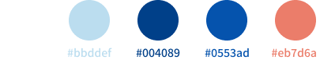
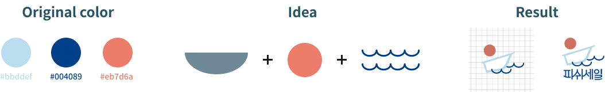
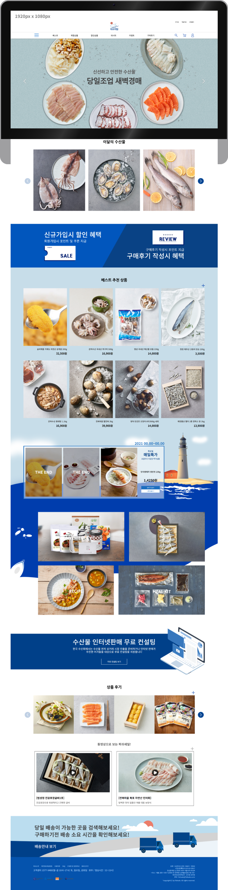
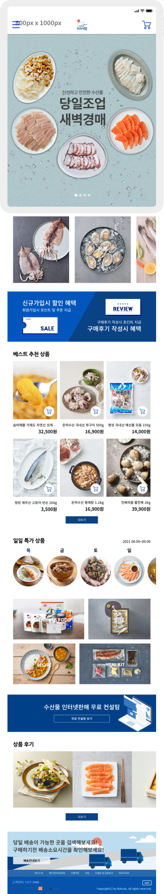
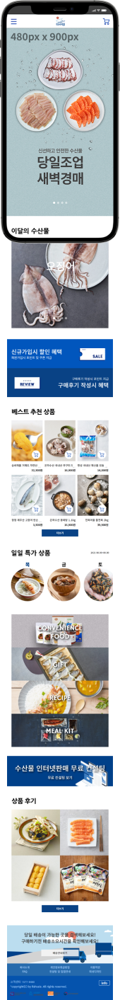
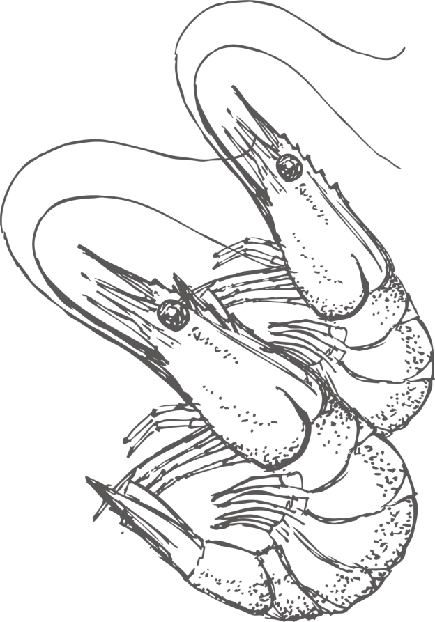
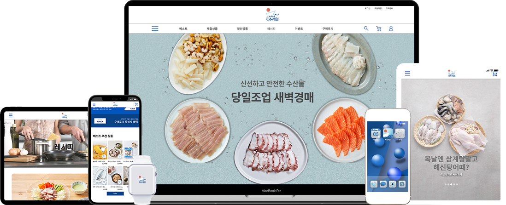

PROJECT CONTENT
- 유형 : 개인 포트폴리오
- 주제 : 피쉬세일 반응형 웹사이트 리뉴얼 프로젝트
- 사용툴 : Photoshop CC, Illustrator CC, notepad++
- 퍼블리싱 언어 : HTML, CSS3, JAVASCRIPT, J-query
- 페이지 수 : 7page
- 제작기간 : 8주
- 참여도 : 100%
-
About project
피쉬세일은 해양수산부 지원으로 한국수산회에서 운영하고 생산자, 수산업자, 소비자를 직접 연결하는 수산물 전문 쇼핑몰입니다.
2004년 수산물 온라인 판매가 미비했던 시기에 앞장서 소규모 어업인들과 함께 상품구성에서부터 포장, 배송 등을 고민하고 연구하여 수산물 전문 쇼핑몰 ‘피쉬세일’을 선보였습니다.
단순하고 재미없는 레이아웃과 매력 없는 이미지를 가진 피쉬세일의 기존사이트를 반응형에 맞춰 리뉴얼하여 사용자들이 흥미와 구매 욕구를 가질 수 있게 제작하였습니다. -
Renewal before
1. 상품이미지와 텍스트정보의 구조와 배치가 답답하며 먹거리 특성상 이미지 화질이 너무 낮음.
2. 최신트렌드와 맞지 않는 올드한 레이아웃과 애니메이션 효과가 없음. -
Result
1. 최신 트렌드를 반영한 레이아웃 구조로 변경하여 사용자들의 집중도를 높이는 레이아웃을 제작하며 다양한 디바이스를 수용하는 반응형 웹사이트로 제작.
2. 지루한 사이트를 벗어나 사용자들에게 흥미를 줄 수 있게 다양한 애니메이션 효과를 적용.
3. 올드한 이미지와 좁은 레이아웃에서 벗어나 다양한 레이아웃과 신선한 이미지를 사용하여 상품 구매효과를 강화 목적. -
Concept
투명함 파란색 물결 소통가격과 바다의 투명성을 보여주는 투명함과 파란색을 선정했으며 포인트는 파도치는 물결과 고객과의 소통을 선정했습니다.
-
Fonts
Noto Sans 나눔고딕디자인 포인트인 소통과 물결을 표현 할 수 있는 부드럽고 사용 빈도수가 높은 폰트를 사용했습니다.
-
Colors
흰색과 파란계열의 컬러와 로고 3가지 컬러를 사용하여 피쉬세일만의 브랜드 아이덴티티를 표현했습니다.
-
Logo redesign
기존로고는 2004년에 만들어진 로고로써 전통적인 네모 프레임을 이용해서 딱딱하고 올드한 느낌이 있지만 컨셉이나 표현이 좋아서
기존 컨셉과 색상, 워드마크는 가져가되 심볼마크를 변경하여 리디자인하였습니다.
Main design
- 
- 
- 

